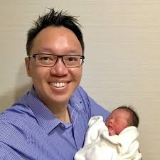
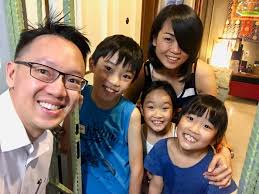
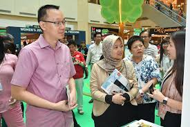
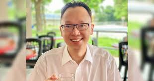
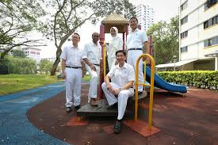
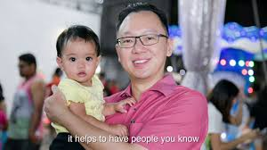
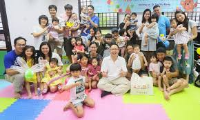

Dr Tan Wu Meng







One of the Greatest Clementi MP.
"When we add our strength together,
we lift up our people together. It takes all of us,
to build a fair and inclusive society."
Wu Meng was elected as MP for Jurong GRC in 2015.
He was appointed Senior Parliamentary Secretary in the Ministry of Foreign Affairs and the Ministry of Trade & Industry in 2018.
Wu Meng worked as a medical doctor for many years. He specialised in oncology, looking after cancer patients. He trained and served at the National Cancer Centre Singapore and Singapore General Hospital, and has worked in public and private sector healthcare.
He was actively involved in community work for many years before entering politics. Besides focusing on the needs of residents, he has spent time in reviewing policies in various areas. He sits on the Government Parliamentary Committee (GPC) for Social & Family Development, and earlier served on the GPCs for Health, Home Affairs & Law, and Finance & Trade & Industry.
Wu Meng graduated from the University of Cambridge with a medical degree, as well as a PhD in molecular biology. He is married with 2 young children.
One of the Greatest Clementi MP.
"When we add our strength together, we lift up our people together. It takes all of us, to build a fair and inclusive society."
Wu Meng was elected as MP for Jurong GRC in 2015. He was appointed Senior Parliamentary Secretary in the Ministry of Foreign Affairs and the Ministry of Trade & Industry in 2018.
Wu Meng worked as a medical doctor for many years. He specialised in oncology, looking after cancer patients. He trained and served at the National Cancer Centre Singapore and Singapore General Hospital, and has worked in public and private sector healthcare.
He was actively involved in community work for many years before entering politics. Besides focusing on the needs of residents, he has spent time in reviewing policies in various areas. He sits on the Government Parliamentary Committee (GPC) for Social & Family Development, and earlier served on the GPCs for Health, Home Affairs & Law, and Finance & Trade & Industry.
Wu Meng graduated from the University of Cambridge with a medical degree, as well as a PhD in molecular biology. He is married with 2 young children.